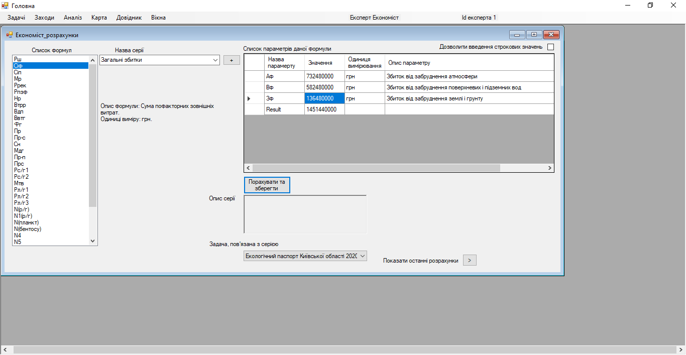

Крок 14. Еколог, лікар, енергетик, економіст збирають всі необхідні параметри, наносять на карту (або обирають на карті) об’єкти, які відносяться до задачі (підприємства, точки збору інформації, області забруднення тощо) і проводять розрахунок показників-маркерів, спираючись на дані один одного. При цьому набір формул для розрахунку формується відповідно до актуальної методики та вибраного експерта, який проводить розрахунки.
